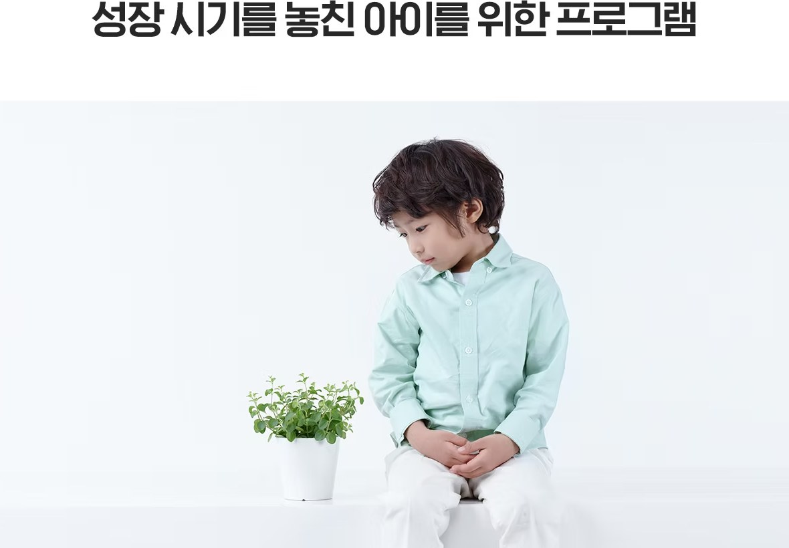
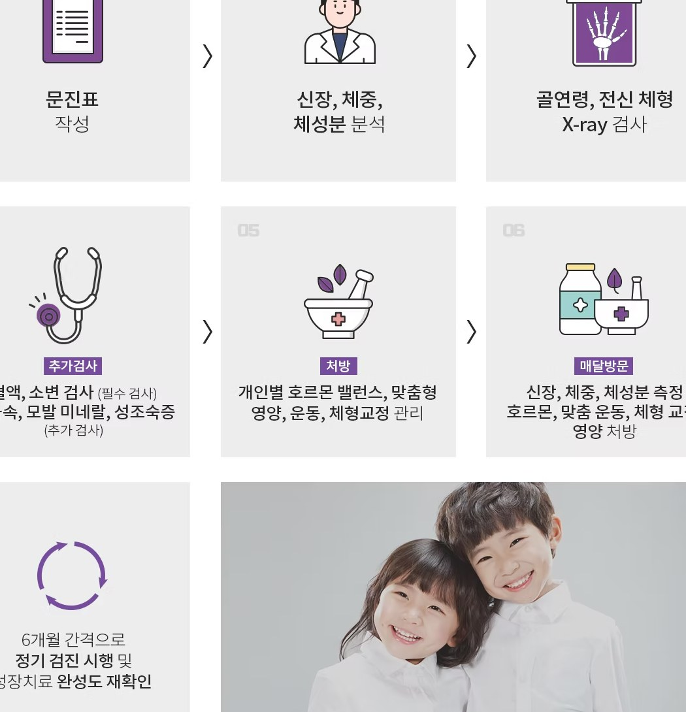

성장 시기를 놓친 아이를 위한 프로그램

성장 시기를 놓친 우리 아이,
더 키울 수 있을까?
사춘기가 후반으로 진행하면 키 성장 속도는 급격하게 줄어들게 됩니다
일반적으로 이런 경우에는 성장 클리닉의 대상이 되지 않습니다
하지만 모델, 연예인, 운동선수를 지망하는 아이들과 같이 특수한 경우에는
일반적인 치료 방침과 달라야 합니다
연세새봄의원에서는 성장 단계별 특화 프로그램을 통해
급성장기가 지난 아이들에게도 도움을 주고 있습니다
나이별 성장 속도 그래프
각 시기에 적절한 성장의 정도를 파악하여
그에 맞는 적절한 치료 및 습관을 교정하는 것이 중요합니다

| 연령 | 연간 성장 속도 (cm/year) | |
|---|---|---|
| 사춘기 이전 | 연 5~6cm 성장 | |
| 사춘기 초기 | 남자 아이 | 연 7~12cm 성장 |
| 여자 아이 | 연 6~11cm 성장 | |
| 사춘기 후기 | 작년 성장률의 반정도 성장 | |
키 성장, 늦지 않았습니다!
연세새봄의원은 단계별 세분화된 성장 프로그램은 진행하고 있습니다

사춘기 진행 속도 조절

틀어진 척추과 골반,
하체의 균형을 회복
하체의 균형을 회복

운동, 영양, 수면을 통한
균형있는 성장
균형있는 성장

호르몬 밸런스를 통한
건강한 성장
건강한 성장
진료 과정
아이의 성장 관리는 아이, 부모님, 의사가 함께 하는 과정입니다
따라서 187 성장 클리닉의 모든 진료 과정을 부모님과 함께 진행하고 있습니다
초진 순간부터 성장 치료가 종료된 후 6개월~1년까지 지속적인
케어를 통해 아이의 건강한 성장을 관리합니다
치료 종료 6개월~1년까지 지속 관리

연세새봄에서는
‘건강하고 균형있는 성장’을
약속 드립니다
연세새봄은 오랜 시간 성장치료를 해온 경험을
바탕으로 미래의 운동선수를 준비하고 있거나 방송,
연기, 모델을 준비하는 우리 아이를 위한 특별한
성장 클리닉 입니다. 바른 영양과 수면, 그리고
균형 잡힌 호르몬 치료를 통해 건강하고 밝은 아이의
미래를 함께 준비합니다.